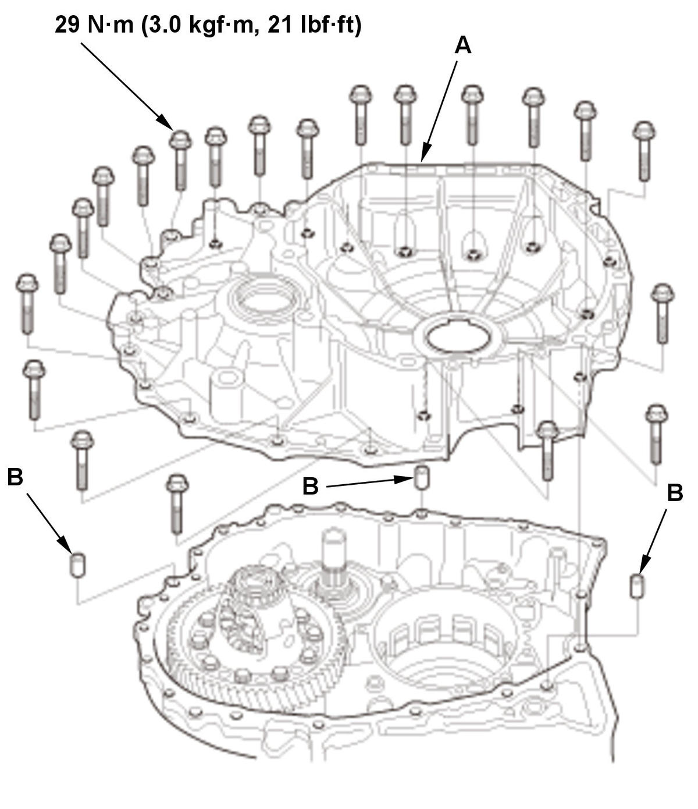

Final Drive Shaft Tapered Roller Bearing Preload Inspection (K20C2, CVT model): Inspection
NOTE:
- If the transmission was disassembled, the final drive shaft tapered roller bearing preload must be adjusted.
- Apply a light coat of clean transmission fluid on all parts before installation.
- Differential Carrier Tapered Roller Bearing Preload - Inspect
- Final Drive Shaft Tapered Roller Bearing Outer Race - Install (Transmission Housing Side)
1. Install the oil guide plate (A). 2. Install the final drive shaft tapered roller bearing outer race (B) until it bottoms using the 40 mm I.D. driver handle.
- Final Drive Shaft Tapered Roller Bearing Outer Race - Install (Torque Converter Housing Side)
1. Install the 51 mm thrust shim (A). 2. Install the final drive shaft tapered roller bearing outer race (B) until it bottoms using the 40 mm I.D. driver handle so there is no clearance between the bearing outer race, the 51 mm thrust shim, and the torque converter housing.
- Final Drive Shaft Assembly and Differential Assembly - Install
- Torque Converter Housing - Install

Courtesy of HONDA, U.S.A., INC.1. Install the torque converter housing (A) with the dowel pins (B), and tighten the bolts in a crisscross pattern in at least two steps. - Final Drive Shaft Tapered Roller Bearing Preload - Inspect
1. Install the preload inspection tool. 2. Press the preload inspection tool gradually by tightening the bolt (A).
3. Rotate the differential assembly in both directions to seat the bearings.
4. Measure the starting torque using the preload inspection tool, a torque wrench (A), and a socket (B).
NOTE: Measure the starting torque at normal room temperature in both directions.
Standard: New Bearing: 10.98-13.59 N.m (112.0-138.6 kgf.cm, 97.2-120.3 lbf.in) Reused Bearing: 9.53-12.14 N.m (97.2-123.8 kgf.cm, 84.4-107.5 lbf.in) 5. If the measurement is out of the standard, remove the 51 mm thrust shim, and measure its thickness, then select a suitable 51 mm thrust shim.
NOTE:
- To increase the starting torque, increase thickness of the 51 mm thrust shim.
- To decrease the starting torque, decrease the thickness of the 51 mm thrust shim.
- Do not use more than two thrust shims to adjust the starting torque.
51 mm Thrust Shim
No. Thickness A 1.375 mm (0.05413 in) B 1.400 mm (0.05512 in) C 1.425 mm (0.05610 in) D 1.450 mm (0.05709 in) E 1.475 mm (0.05807 in) F 1.500 mm (0.05906 in) G 1.525 mm (0.06004 in) H 1.550 mm (0.06102 in) I 1.575 mm (0.06201 in) J 1.600 mm (0.06299 in) K 1.625 mm (0.06398 in) L 1.650 mm (0.06496 in) M 1.675 mm (0.06594 in) N 1.700 mm (0.06693 in) O 1.725 mm (0.06791 in) P 1.750 mm (0.06890 in) Q 1.775 mm (0.06988 in) R 1.800 mm (0.07087 in) S 1.825 mm (0.07185 in) T 1.850 mm (0.07283 in) U 1.875 mm (0.07382 in) V 1.900 mm (0.07480 in) W 1.925 mm (0.07579 in) X 1.950 mm (0.07677 in) Y 1.975 mm (0.07776 in) Z 2.000 mm (0.07874 in) 0A 2.025 mm (0.07972 in) 6. Install a selected 51 mm thrust shim, then recheck the starting torque.